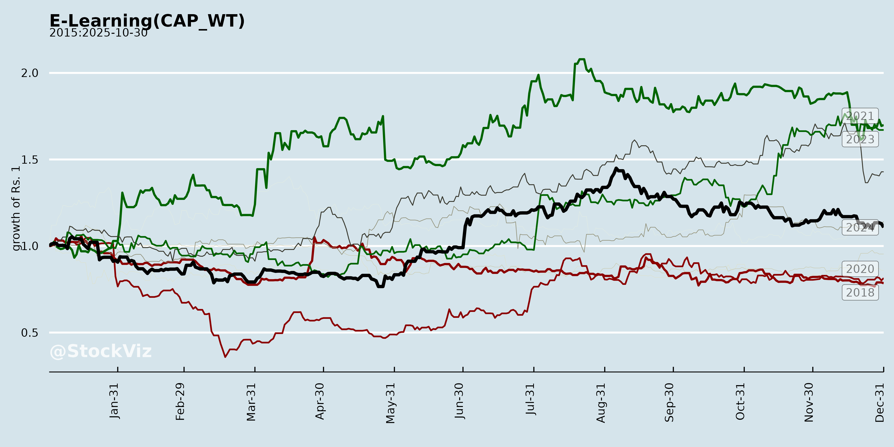
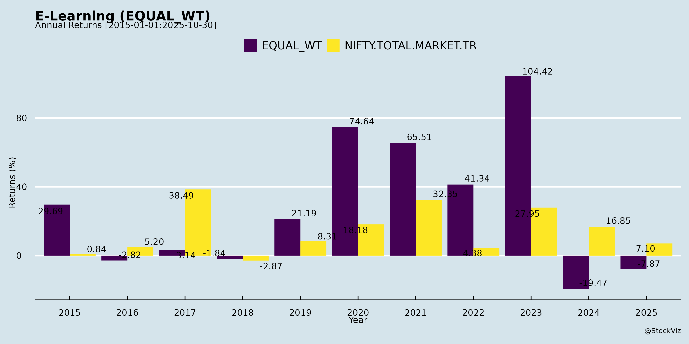
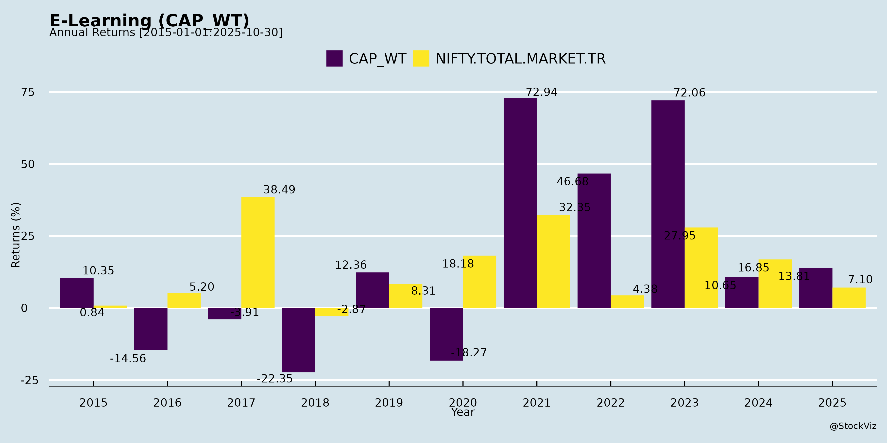
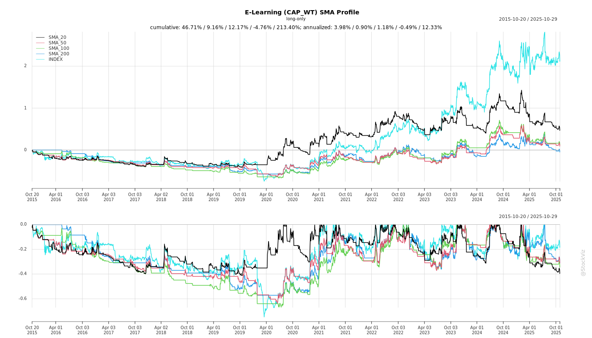
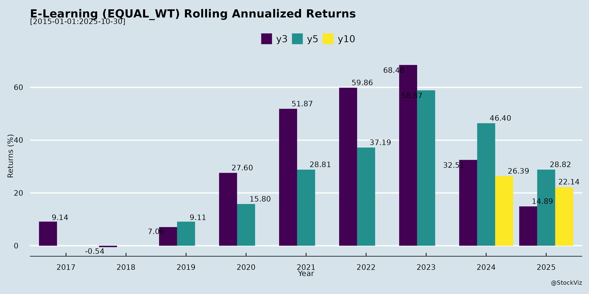
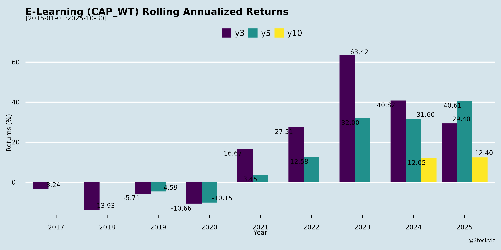

asof: 2025-11-29
Analysis of Indian E-Learning Sector (Based on MPS Limited, Veranda Learning, and Jaro Education Documents)
The provided documents primarily cover MPS Limited (publishing services with strong Education and Research verticals leveraging AI/digital workflows) and Veranda Learning Solutions (test prep, K-12 academics, online programs like BB Virtual; undergoing demerger/divestment), with minimal input from Jaro Education (meeting intimation only, implying investor engagement in online management education). These reflect edtech/e-learning trends in test prep, K-12/higher ed digital solutions, corporate learning, and AI-enabled content/workflows. Below is a structured analysis of headwinds, tailwinds, growth prospects, and key risks.
Tailwinds (Positive Drivers)
Headwinds (Challenges)
Growth Prospects
Key Risks
Summary
The Indian E-Learning sector (via MPS/Veranda lens) shows resilient growth driven by AI efficiencies, test prep dominance, and restructuring (tailwinds scoring high on margins/enrollments). FY26 prospects strong (20%+ rev growth, 30-47% EBITDA margins) with asset-light digital expansion, acquisitions, and value-unlocking demergers/JVs. However, headwinds from segment softness and seasonality persist, alongside execution risks in integrations/timelines. Overall bullish outlook (debt discipline, AI leverage) but monitor Corporate Learning recovery and Q3-Q4 revenue ramps. Sector poised for 20-50% segmental growth if AI/monetization scales, tempered by 2.5-3x debt multiples in residual biz. Jaro’s investor outreach signals continued interest in online edtech.
| Factor | Rating (Out of 5) | Key Driver |
|---|---|---|
| Tailwinds | 4.5 | AI + Demand |
| Growth Prospects | 4.5 | Expansion + Guidance |
| Headwinds | 3.0 | Segment Weakness |
| Risks | 3.5 | Execution/Debt |
asof: 2025-11-29
Analysis of Indian E-Learning Sector: Headwinds, Tailwinds, Growth Prospects, and Key Risks
The provided documents primarily cover Q3/Nine Months FY25 financial results (ended Dec 2024) for MPS Limited (strong performer with robust standalone/consolidated growth) and Veranda Learning Solutions Limited (struggling with heavy losses), alongside minor clarifications from G-TEC JAINX Education and Usha Martin Education & Solutions (no substantive financial data; only XBRL filing errors). These reflect a bifurcated sector: established players like MPS thrive via acquisitions and diversification, while scaling edtechs like Veranda face execution and debt challenges. Below is a structured summary based on key metrics, notes, and disclosures.
Tailwinds (Positive Factors Supporting Growth)
Headwinds (Challenges Dragging Performance)
Growth Prospects
Key Risks
| Risk Category | Description | Evidence from Documents |
|---|---|---|
| Financial/Liquidity | High debt, losses, going concern doubts. | Veranda: Losses ₹25,845 lakhs (9M); debt defaults nil but high interest; promoter funding mitigates but unproven. MPS low risk. |
| Impairment/Asset Quality | Goodwill/intangibles/write-offs from acquisitions. | Veranda: BAssure impairment ₹2,246 lakhs; software lives shortened (₹10,108 lakhs amort.). MPS: Provisional goodwill ₹74Cr. |
| Execution/Integration | Sub performance, contract disruptions. | Veranda: Sreedhar CCE disengagement post-Q3; subs with losses/net worth erosion. MPS: Unreviewed subs/branches (minor losses). |
| Regulatory/Compliance | NBFC/CIC classification, RBI scrutiny. | Veranda: Multiple waiver applications; CIC disclosures pending. XBRL errors in others (G-TEC/Usha) signal process risks. |
| Macro/Competition | Economic slowdown, tutor dependency, forex volatility. | Veranda: Global challenges for subs; OCI forex losses. Intense rivalry (Byju’s-like issues spillover). |
| Operational | Talent churn, tech obsolescence. | High employee costs (MPS ₹7,933 lakhs Q3); Veranda ESOPs but losses erode morale. |
Overall Sector Outlook: Optimistic for Leaders (MPS-like) with 20-30% growth via M&A/digital shift; Cautious for Challengers (Veranda-like) needing deleveraging (debt/EBITDA >10x implied). Risks tilted toward weaker players; tailwinds from policy/demand favor survivors. Investors should prioritize profitability > revenue growth.
asof: 2025-11-29
Summary Analysis of Indian E-Learning Sector (Based on Provided Documents)
The provided documents from key players like MPS Limited, Veranda Learning Solutions Limited, G-TEC JAINX Education Limited, and Usha Martin Education & Solutions Limited offer insights into operational updates (AGMs, board outcomes), financial performance (Q1 FY26 results for G-TEC showing modest profits; FY25 audited results for Usha Martin with PAT growth), and strategic moves (Veranda’s divestment and 50% stake acquisition in SNVA Edutech). These reflect a sector focused on skill development, vocational training, and IT education amid NEP 2020’s push for digital learning. Overall, the sector shows resilience with restructuring but faces employability and economic pressures. Below is a structured analysis of headwinds, tailwinds, growth prospects, and key risks.
Tailwinds (Positive Drivers)
Headwinds (Challenges)
Growth Prospects
Key Risks
| Risk Category | Description | Mitigation from Docs |
|---|---|---|
| Economic/Employability | Job losses reduce enrollments (Usha Martin: 5-12% unemployment). | Hybrid models, corporate training. |
| Regulatory | SEBI LODR/Companies Act compliances (e.g., Reg 24A secretarial audits); IT penalty appeal (Usha Martin ₹82L). | Timely filings, appeals. |
| Operational | Online limitations for practical skills; integration post-restructuring (Veranda). | VC AGMs, auditor reviews. |
| Financial | Debt (Usha Martin ₹7L ICDs); ECL on receivables (₹1.5Cr provisioned). | Cash-positive ops (₹11Cr CFO). |
| Competition | 4,500+ startups; pricing pressure. | Niche focus (IT/vocational). |
Overall Outlook: Moderately positive with tailwinds from policy/digital shift outweighing headwinds (tailwinds stronger post-FY25 recovery). Growth at 20-25% CAGR feasible via skilling demand, but execution risks remain. Sector PE ~20-30x; monitor Q2 FY26 for sustained profitability. Recommendation: Bullish long-term (3-5 yrs) with tactical buys on dips.
asof: 2025-11-29
Analysis of Indian E-Learning Sector (Based on MPS Limited, Veranda Learning Solutions, and Jaro Education Inputs)
The provided documents primarily cover MPS Limited (edtech services in Research/Education/Corporate Learning with AI focus) and Veranda Learning Solutions (test prep, K-12 managed schools, vocational skilling with online/offline mix), representing key players in India’s e-learning/edtech ecosystem. MPS emphasizes AI-driven publishing/education services, while Veranda focuses on test prep and school management. Jaro Education’s input is limited (investor meeting notice). Insights reflect Q2/H1 FY26 performance amid AI adoption, restructuring, and demand recovery post-pandemic. Below is a structured analysis of headwinds, tailwinds, growth prospects, and key risks.
Tailwinds (Positive Drivers)
Headwinds (Challenges)
Growth Prospects
Key Risks
Summary
India’s e-learning sector shows strong tailwinds from AI adoption, enrollment surges, and restructuring (demergers/JVs unlocking ₹500+ Cr combined value), driving 20%+ revenue growth and margin gains in FY26. Growth prospects are promising (₹2,000+ Cr combined FY26-27 potential), fueled by asset-light expansion, online/foreign courses, and acquisitions. However, headwinds like segmental softness and seasonality persist, with key risks centered on execution (integrations, approvals) and macro factors. Overall, bullish outlook for profitable scaling (ROE to 24-30% in 3-5 years), but success hinges on deleveraging and H2 momentum. Investors should monitor Q3 results for demerger progress and AI traction.
| Aspect | Rating (Out of 10) | Key Driver |
|---|---|---|
| Tailwinds | 8.5 | AI + Demand Recovery |
| Headwinds | 6.0 | Segment Volatility |
| Growth Prospects | 8.0 | Restructuring + Expansion |
| Key Risks | 7.0 | Execution-Focused |
asof: 2025-11-29
Summary Analysis: Indian E-Learning/Education Sector (Based on Q2/H1 FY26 Results of Key Players)
The provided documents cover unaudited Q2/H1 FY26 financial results (ended Sep 30, 2025) for five NSE-listed education companies: MPS Limited (strong content/services player), Veranda Learning (test-prep/commerce focus), Jaro Education (recent IPO, program services), G-TEC Jainx Education (small IT education), and Usha Martin Education (minimal operations). These represent diverse sub-sectors like research/education solutions, test-prep, corporate learning, and IT training. The sector shows resilient revenue growth (10-100% YoY in most) amid digital adoption, but profitability varies due to restructuring and scale issues. Overall market tailwinds from NEP 2020 and online shift persist, but execution challenges loom.
Tailwinds (Positive Drivers)
Headwinds (Challenges)
Growth Prospects (Opportunities)
Key Risks
Overall Outlook: Positive with caution. Tailwinds from digitalization/IPOs drive 15-20% sector growth FY26, led by MPS/Jaro. Veranda’s turnaround key; smaller peers lag. Risks mitigated by cash raises, but monitor debt/restructuring. Investors favor scaled, profitable players amid edtech consolidation. (Sources: Q2/H1 FY26 filings; no forward guidance given.)
asof: 2025-11-29
Summary Analysis of Indian E-Learning Sector (Based on Provided Documents)
The provided documents highlight announcements from three listed Indian education/e-learning companies—MPS Limited (via subsidiary MPSi), Veranda Learning Solutions (Veranda K-12), and G-TEC JAINX Education Limited. These reflect strategic expansions, innovation initiatives, and regulatory compliance in the sector. Below is an analysis of headwinds, tailwinds, growth prospects, and key risks, derived directly from the content.
Tailwinds (Positive Momentum)
Headwinds (Challenges)
Growth Prospects
Key Risks
Overall Outlook: Strong tailwinds from strategic M&A and innovation outweigh visible headwinds, positioning Indian e-learning for robust growth (global synergies, K-12 scale). However, execution risks in integrations and disclosures warrant monitoring. Sector poised for expansion if leveraging tech like AI/VR effectively.
Copyright © 2023 SAS Data Analytics Pvt. Ltd. All rights reserved.